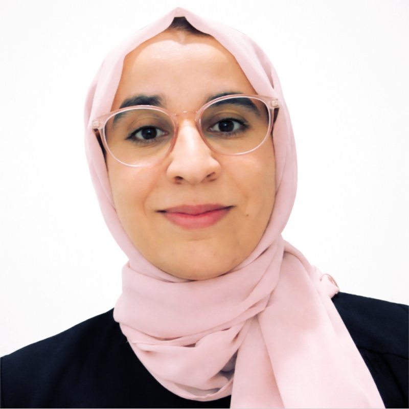

Aug 2026
WaveViT-YOLO: A Hybrid Architecture for Dental Caries Detection in Intraoral Photographs
Journal paper. Applied Sciences (MDPI) 16 (16), 8257. Open access. DOI 10.3390/app16168257

AI Researcher & Engineer
PhD in Computer Science and Communication
HTWG KonstanzUniversity of Applied Sciences
IT Engineer at HTWG Konstanz. AI researcher and engineer working on AI-driven digital twins for smart agriculture, machine learning, and full-stack development.
Latest paper: WaveViT-YOLO, a hybrid detector for dental caries in intraoral photographs, published in Applied Sciences in August 2026. Read it open access.
Aug 2026
Journal paper. Applied Sciences (MDPI) 16 (16), 8257. Open access. DOI 10.3390/app16168257
2026
Conference paper. 30th International Conference on Knowledge-Based and Intelligent Information and Engineering Systems.
2025
Conference paper. Asian Conference on Intelligent Information and Database Systems, 304-315. Ranked B.
2024
Journal paper. Neurocomputing 596, 127976. Q1, impact factor 10.5. DOI 10.1016/j.neucom.2024.127976
12 - 14 Dec 2023
Conference paper. International Conference on Hybrid Intelligent Systems, India, 262-271.
21 Dec 2021
Smart agricultural seminar, Douz, Tunisia. Best poster presentation award.
9 Oct 2021
Conference paper. International Conference of Machine Vision, Rome, Italy.
Jul 2026 – present
HTWG Hochschule Konstanz – Technik, Wirtschaft und Gestaltung, Constance, Germany
Aug 2025 – Jul 2026
University of Konstanz, Germany
Dec 2021 – Sep 2025
Iselm Retail Company, Médenine, Tunisia
Sep 2023 – Jun 2025
Faculty of Science, University of Gabes
2022 – 2025
National Engineering School, University of Gabes
2019 – 2022
Faculty of Science, University of Gabes
2016 – 2019
Faculty of Science, University of Gabes
2015 – 2016
Technical High School of Medenine
Jan – Jul 2024
Freelance project
Implemented a purpose-driven Android application aimed at supporting individuals with health concerns by providing real-time air quality monitoring.
Technology: TensorFlow, Keras, OpenCV, and NumPy.
May – Sep 2023
Freelance project
Implemented an E-commerce and Inventory Management System using Flask and Python. Designed and integrated essential features such as product listings, shopping cart functionality, order processing, and inventory management.
Technology: Python, Flask, JavaScript, and PostgreSQL.
Jul 2022 – May 2023
Freelance project
Implemented an intelligent method to detect diseases that occur on plant leaves in real time using an optimized version of You Only Look Once and Convolution Neural Network models.
Technology: TensorFlow, Keras, OpenCV, and NumPy.
Jul 2022 – Mar 2023
Freelance project
Design and implement a multimodal approach for recognizing the base eight emotions in input video streaming using a Convolution Neural Network and features selection and fusion.
Technology: TensorFlow, Keras, OpenCV, and NumPy.
Mar – Dec 2021
Master's project
Design and implement an intelligent approach to identify date palm varieties by classifying both fruit and leaves images using a Convolution Neural Network.
Technology: TensorFlow, Keras, OpenCV, and NumPy.
Dr. Ridha Ejbali, Full Professor
Faculty of Sciences, University of Gabes, Tunisia